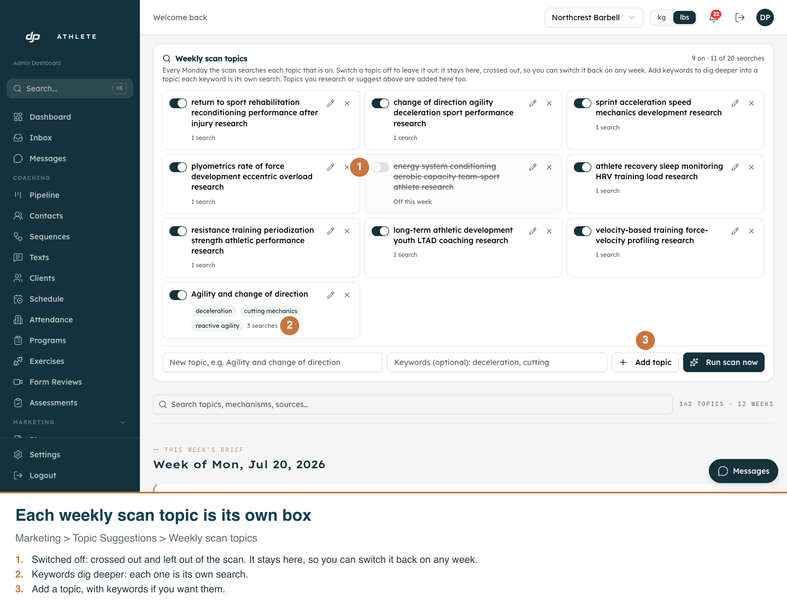
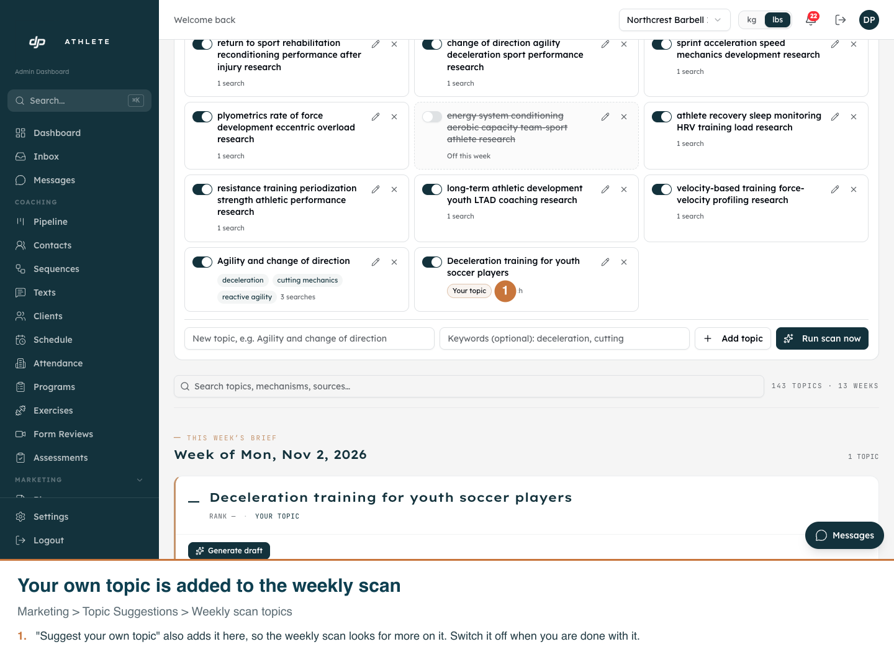
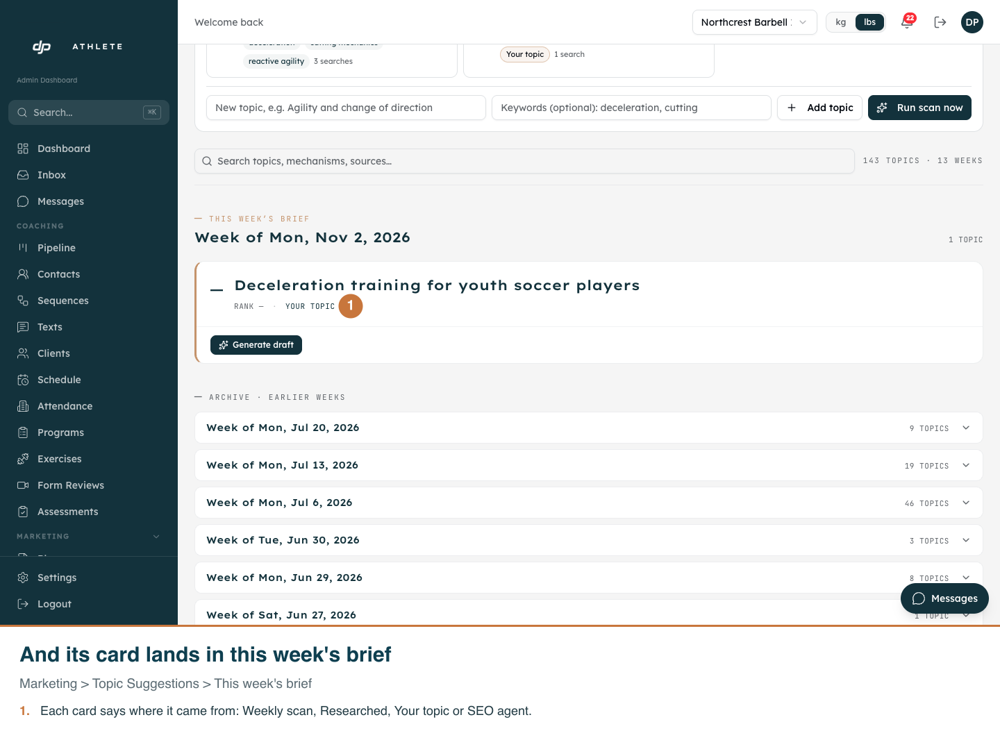

Real app, development clone, light mode. Captured on 2026-10-31 with
scripts/capture-topic-suggestions.mjs, which puts the clone's scan list back and deletes its card afterwards.
On the clone the newest scan is from July, so this week's brief holds only the added card; on the live site it joins
that week's scanned topics.


